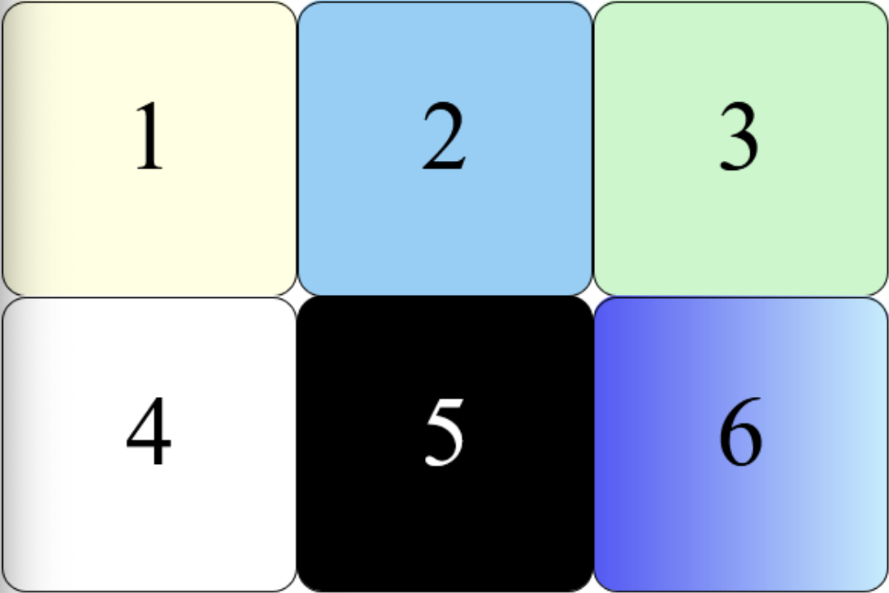

Zie het onderstaande voorbeeld en maak het na met flexbox.

HTML
<div class="container">
<div class="block-1"></div>
<div class="block-2"></div>
<div class="block-3"></div>
<div class="block-4"></div>
<div class="block-5"></div>
<div class="block-6"></div>
</div<
CSS
.container {
display: flex;
flex-wrap: wrap;
width: 68.250em;
}
.container > div {
display: flex;
flex: 0 0 calc(33.3% - 4px);
block-size: 3.6em;
border-radius: 20px;
justify-content: center;
align-items: center;
font-family: 'Times New Roman', Times, serif;
font-size: 6em;
border: 2px solid black;
}
.block-1 {
background: rgb(255, 255, 228);
}
.block-2 {
background: rgb(153, 206, 244);
}
.block-3 {
background: rgb(205, 245, 205);
}
.block-4 {
background: white;
}
.block-5 {
background: black;
color: white;
}
.block-6 {
background: linear-gradient(to right, royalblue, lightcyan);
}
De width van elke flex item wordt berekend dmv percentages (flex: 0 0 calc(33.3% - 4px);) minus de rechter en linker border van een flexitem;